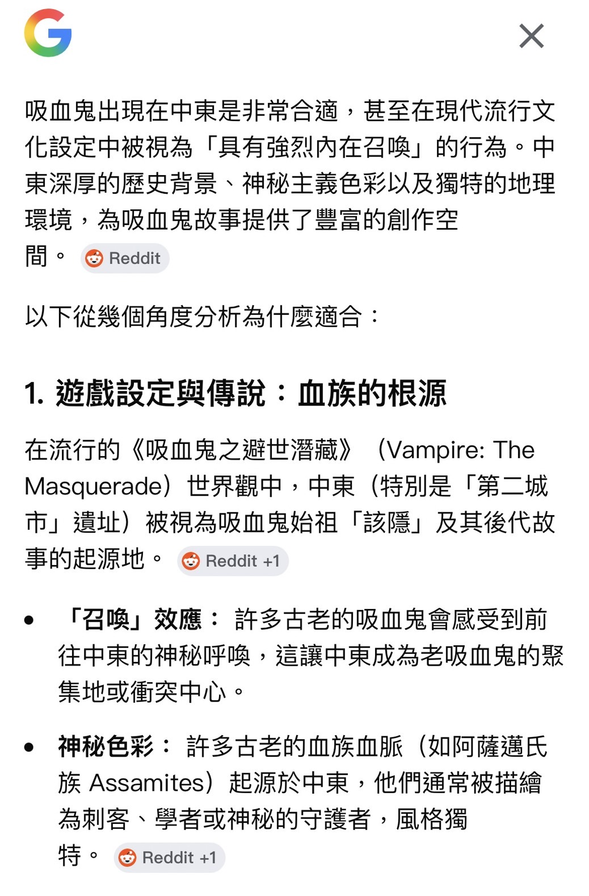
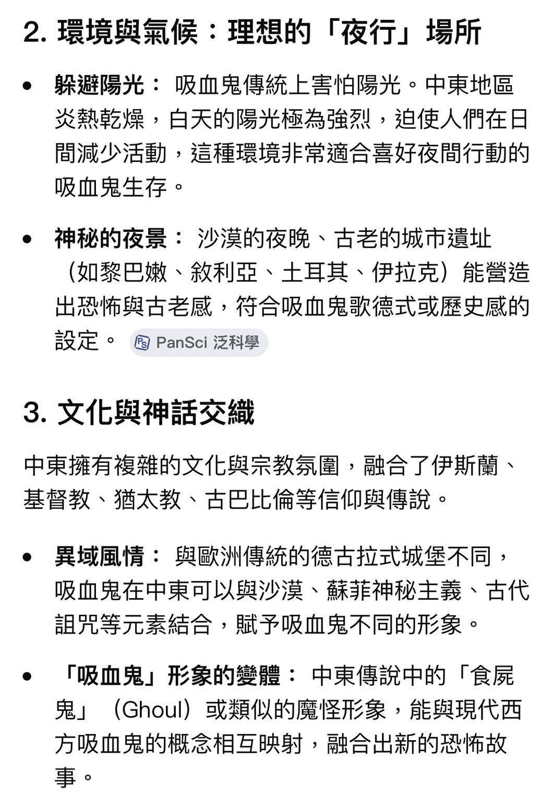
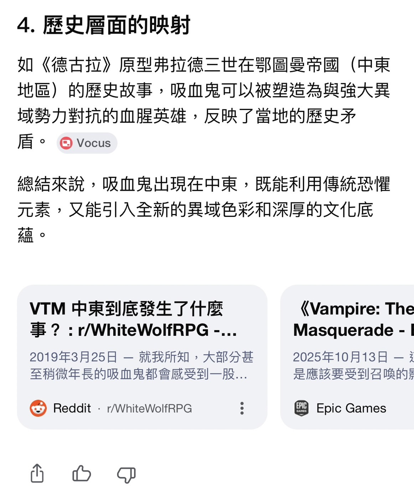

點擊上方的語言選單以切換語言
在現代流行文化的認知中，吸血鬼始祖的形象往往在十五世紀的羅馬尼亞貴族「德古拉」與聖經首位謀殺者「該隱」之間擺盪。然而，這兩者在吸血鬼神話中的地位有著本質上的差異。
德古拉（Dracula） 作為布蘭·史托克於 1897 年筆下的經典角色，實質上定義了現代吸血鬼的視覺語言——披風、優雅、變身以及貴族氣質。而該隱被視為始祖的設定，則是二十世紀末透過《吸血鬼之避世潛藏》等桌上角色扮演遊戲（TRPG）才廣為流傳的「二創設定」。這種認知的落差源於後世創作者為了增加故事的宗教深度，刻意將聖經中的流浪詛咒與吸血鬼的不死特性結合。



吸血鬼最初起源於歐洲東部與斯拉夫民族的民間傳說，其原始形象與基督教並無直接關聯。早期的吸血鬼被視為一種不潔的屍體變異，民間對付他們的方法通常是使用大蒜、刺穿心臟或是焚燒，而非宗教法器。
十字架、聖水與教堂等元素，是在 基督教文化傳入歐洲 並與在地信仰融合後，才逐漸被納入傳說體系中的「文化適應」現象。聖經文本本身並未記載任何吸血鬼生物，現代人所熟知的宗教剋星設定，更多是維多利亞時代文學為了探討信仰與邪惡對抗所塑造的戲劇衝突。
既然吸血鬼在本質上是一種虛構的文化載體，其地理起源與族裔血統便不存在絕對的「正統性」。將起源地設定在東亞，不僅在創作邏輯上完全合理，更能產生獨特的魅力。
從港劇《我和殭屍有個約會》中盤古神話與吸血鬼的結合與台灣小說《獵命師傳奇》中吸血鬼與歷史名將的連結，到韓劇《夜行書生》中吸血鬼捲入的宮廷鬥爭和日漫《彼岸島》中吸血鬼與海島和神社文化的融合，這些作品展示了吸血鬼如何脫離高加索人的形象，與東方的社會倫理、歷史敘事及超自然體系完美融合。這印證了在創作的世界裡，誰是始祖、生於何處，最終取決於作品背後的 文化詮釋權 與創作者的想像力。